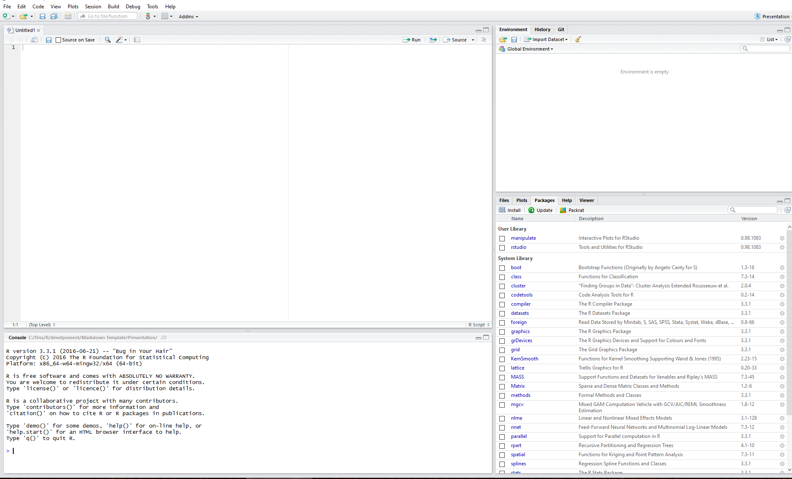

R basics
An introduction to R
Franziska Faupel
MOSaIC
Structure
- R - What is it?!
- Why using R?
- How to start?
- Scipts and why they are usefull
- Getting started with R
1. R - What is it?!
1. R - What is it?!
- R is a language and environment for statistical computing and graphics
- Open Source Software: www.r-project.org
- extendible by packages (libraries)
- running with most operational systems
- interfaces to C, Python and Fortran etc.
- functional with object oriented extension
- vector based / dataframe
- developing and implementing own functions

Why should I apply statistics?
Data analysis is an essential tool of empirical research
"learning programming is learning to think"
forcing the problem in a logical and sequential structure
History of R
- 1976: S language by John Chambers at Bell Laboratories (AT&T)

History of R
1976: S language by John Chambers at Bell Laboratories (AT&T)
1993: Free implementation of R under the name R by Ross Ihaka and Robert Gentleman
History of R
- 1976: S language by John Chambers at Bell Laboratories (AT&T)
- 1993: Free implementation of R under the name R by Ross Ihaka and Robert Gentleman
- 1997: R becomes GNU project
- 2000: R1.0
- 2015: R Consortium: R Foundation, Microsoft, R Studio, Google etc.
2. Why using R?
2. Some Advantages and Disadvantages
Most statistical software provides usfull standartised test, as \(chi^2\) test etc. R has some very convienient advantages:
| Advantages | Disadvantages |
|---|---|
| reproducibility and verifiablilty | high barriers to learn |
| flexible and extensible | 'raw' syntax |
| many different packages | |
| customisable | |
| independent platform with a great support |
7 levels of using R
- Asking a colleague to run R for you
- Applying build in functions
- Combining build in functions
- Writing own algorithms
- Writing own functions and objects
- Developing efficient code
- Writing own packages
3. How to start?
Gerneral Workflow | Before you beginn
- Problem: Put your question.
- Theory: Which theoretical frame is adequate for solving the problem?
- Data: Which data can be used for solving the problem? Are they available as database etc.? How can you access the data?
- Method: Which methods can solve the problem? Learn the methods!
- Tool: Learn the tools to apply the methods.
- Finally: Check, validate and interpret the results. plausible? significant?
Gerneral Workflow | Now, you can beginn
- Loading data
- Exploring data
- Analysing data
- Descriptive analysis
- Univariate analysis
- Bivariate analysis
- Multivariate analysis
- Descriptive analysis
- Inference
- tests
- Bayes
- Simulation
- Visualise and export results
- Report and publication
3. How to start? | R Studio

3. R Studio | Text Editor
3. R Studio | Console
3. R Studio | File Manager
3. R Studio | Documentation viewer
3. R Studio | Project and Session Manager
3. R Studio | Workspace Explorer
3. R Studio | Package Manager

3. R Studio | Wirzards and Assistants
3. How to start? | R Studio
- Text Editor
- Console
- Data Explorer
- File Manager
- Image Viewer
- Documentation Viewer
- Project and Session Manager
- Workspace Explorer
- Package Manager
- Wizards and Assistants
4. Scipts and why they are usefull
Lets talk about scripts
- Scripts are an exact documentation of the work.
- Scripts allow reproducing the analysis.
- Scripts allow reusing commands, algorithms etc.
- Scripts allow sharing code.
- Scripts allow the automation of complex analyses.
- Scripts allow the automation of report generation; for instance, in R with the packages
knitrorsweave. - Scripts allow rerunning and testing code snippets.
- Scripts make it easy to create complex solutions.
- Scripts allow limiting the active knowledge of the researcher to the most important aspects.
Lets talk about scripts | Some rules
- Each analysis has its own script.
- Each script has a header containing important information such as title, topic, purpose, author, date, etc.
Lets talk about scripts | Script Header
##################################################################
## Didactic R-Script for Modelling Summer School
## ===============================================================
## Project: Modelling Summer School
## Author: O. Nakoinz, D. Knitter & F. Faupel
## Version: 01
## Date of last changes: 03.08.2016
## Data: some.data
## Author of data: author.data
## Purpose: didactic
## Content: 1. preparation, 2. data import, ...
## Description: The script include ...
## Licence data: -
## Licence Script: GPL (http://www.gnu.org/licenses/gpl-3.0.html)
##################################################################
Lets talk about scripts | Some rules
- For each command, you should learn the usage only once.
- Supplement the command with comments so that you can re-use the command for similar purposes without reading the manual again.
- Copy, paste and adapt the commands from old scripts.
# This is a comment
a <- c(3,6,7,4,9,7,3,3,3) # This is a vector
median(a) # This is the "median" function
## [1] 4
- Use standardised names and denotations to ease the re-use of code.
Lets talk about scripts | Some rules
- Use detailed comments to understand your analysis years later.
- It is useful to think that you should hand over the script to a colleague with limited knowledge to optimise comments and structure.
- Use versioning of the scripts by adding a version number to the file name (-v01.xxx) or a version control system.
Lets talk about scripts | Some rules

- Use detailed comments to understand your analysis years later.
- It is useful to think that you should hand over the script to a colleague with limited knowledge to optimise comments and structure.
- Use versioning of the scripts by adding a version number to the file name
(-v01.xxx) or a version control system.
- For example GitHub: https://github.com/
Lets talk about scripts | Some rules
- Avoid special characters in file names, variable names, etc.
- Subset Ä with Ae etc.
- Moreover, it is a good idea to encode the file in UTF8.
- Use a convenient yet standardised folder structure for scripts, data, results and reports.
Lets talk about scripts
Use a convenient yet standardised folder structure for scripts, data, results and reports. During the Mosaic Summer School, we will work with the follwoing structure.
- 1script
- 2data
- 3geodata
- 4ws
- 5results
- 6pictures
- 7report
Weblinks
| Source | Link |
|---|---|
| R Foundation Homepage | https://www.r-project.org/ |
| Homepage of RStudio | https://www.rstudio.com/ |
| Homepage of R Consortium | https://www.r-consortium.org/ |
| R language | https://de.wikipedia.org/wiki/R_(Programmiersprache) |
| R language (german) | https://en.wikipedia.org/wiki/R_(programming_language) |
| Wikibook | https://de.wikibooks.org/wiki/GNU_R |
| Support | http://www.r-bloggers.com |
| Support | http://stackoverflow.com/ |
| ISAAKiel | https://isaakiel.github.io/ |
Weblinks and literature

- J. Adler, R in a nutshell, Second edition. (Sebastopol 2012)
- J. M. Chambers, A Statistical Data Language. In: R. C. Milton, J. A. Nelder (Hrsg.), Statistical Computation. (New York 1969), 179-199.
Thinks to remember
- Scripts are an exact documentation of the work.
Let's make a break...
5. Getting started with R
5. Getting started with R
# This is an R Code sniplet
5+3
5-3
5*3
5/3
5^2
- Please start R Studio
- We will get used to R!
5. Getting started with R
# This is an R Code sniplet
5+3
5-3
5*3
5/3
5^2
5. Getting started with R
# This is an R Code sniplet
5+3
## [1] 8
5-3
## [1] 2
5*3
## [1] 15
5/3
## [1] 1.666667
5^2
## [1] 25
5. Getting started with R
sqrt(25)
sin(3.14)
3.14 * (180 / pi)
log(25)
log10(25)
5. Getting started with R
sqrt(25)
## [1] 5
sin(3.14)
## [1] 0.001592653
3.14 * (180 / pi)
## [1] 179.9087
log(25)
## [1] 3.218876
log10(25)
## [1] 1.39794
5. Getting started with R
abs(-23.45)
round(2.454324,2)
ceiling(2.5)
floor(2.5)
5. Getting started with R
abs(-23.45)
## [1] 23.45
round(2.454324,2)
## [1] 2.45
ceiling(2.5)
## [1] 3
floor(2.5)
## [1] 2